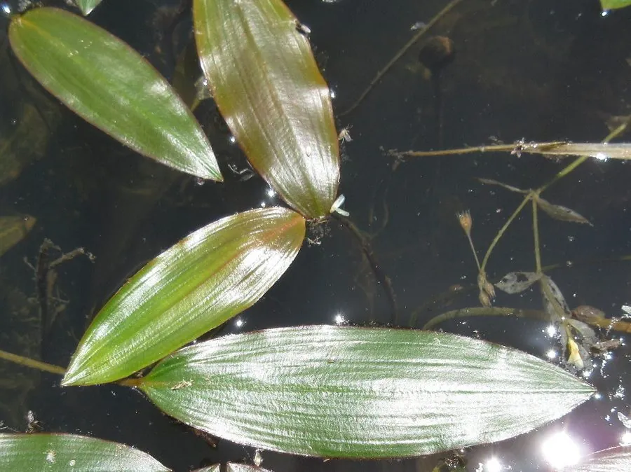

水生植物 · 植物界
眼子菜 Potamogeton distinctus

眼子菜科多年生水生草本，浮水叶与沉水叶形态不同，叶片浮于水面如小荷叶，是水田和池塘常见的水生植物。
- 分类
- 门被子植物门纲木兰纲目泽泻目科眼子菜科属眼子菜属
- 栖息环境
- 水田、池塘、沟渠的浅水区，喜温暖、阳光充足
- 地理分布
- 原产东亚，中国各地水田与池塘常见，日本、朝鲜半岛也有分布
- 保护级别
- 暂无评估
物种志
眼子菜为眼子菜科眼子菜属多年生水生草本，具匍匐根状茎。叶片两型：浮水叶长椭圆形，革质，有长叶柄，浮于水面；沉水叶线形或披针形，膜质。花小，黄绿色，生于挺出水面的穗状花序上，花期 5–7 月；果实为小坚果。
眼子菜原产东亚，中国各地水田、池塘和沟渠常见，喜温暖、阳光充足和静水环境，靠根状茎和种子繁殖。它同一株上同时有浮水叶和沉水叶，形态差异明显，是典型的异叶性植物。眼子菜在水田中生长旺盛时会与水稻争夺养分，被视为杂草；但它也可作饲料和绿肥，还能吸收水中氮磷，在湿地净化中发挥作用，是水田与湿地中非常常见的水生植物之一。
形态与习性
- 株高茎细长，浮水叶浮于水面
- 花期5–7 月，花小，黄绿色
- 果期花后结小坚果
- 光照喜充足阳光
- 水分浅水，水深 10–60 厘米
- 土壤水田淤泥或塘泥
- 繁殖根状茎与种子繁殖
- 主要用途饲料、绿肥、湿地净化，水田中为杂草
趣味知识
- 眼子菜同一株上同时有浮水叶和沉水叶，形态差异明显，属于异叶性。
- 浮水叶革质、长椭圆形，沉水叶线形、膜质，功能各不相同。
- 它在水田中与水稻争夺养分，常被视为杂草。
- 眼子菜也可作饲料和绿肥，并有一定的水质净化作用。